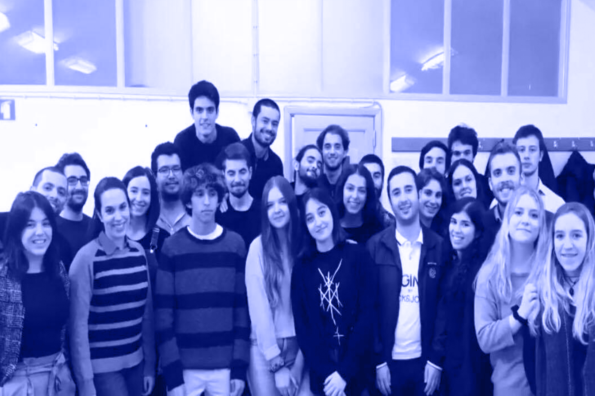
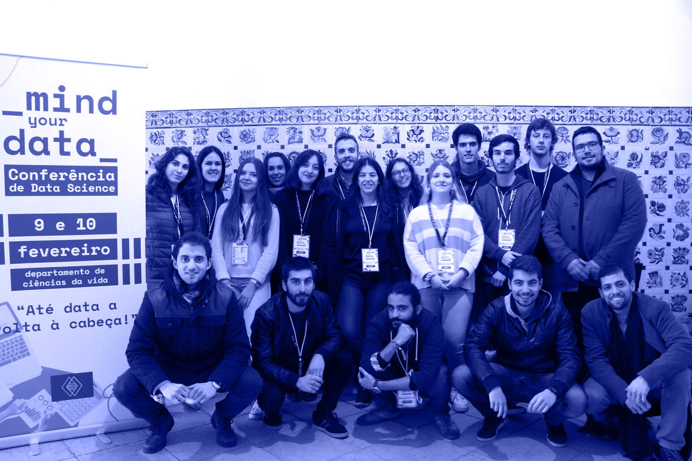
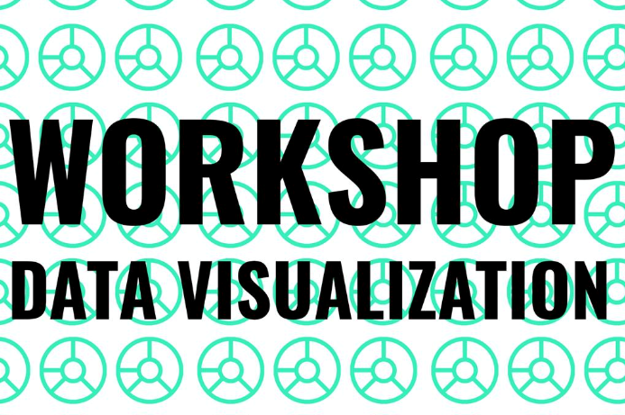
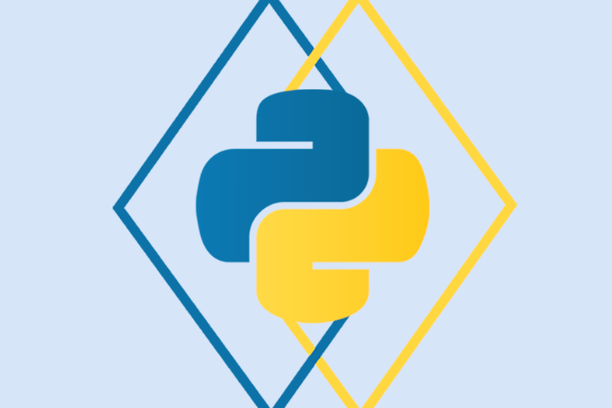
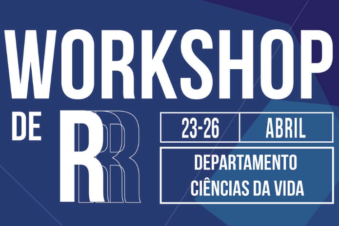

Junior Enterprise for Science and Technology — JEST — was born from the interest in learning while
working and the will to do so.
A project rooted in the Faculty of Science and Technology of the University of Coimbra, featuring a
multidisciplinary team with experts and enthusiasts in several different areas, ranging from
programming to graphic design. We value the development of personal and professional skills by all
our members, as well as the dynamic and productive interaction with the business, scientific and
academic fields in the Coimbra area.
Furthermore, we have a constant commitment to evolve and understand the environment in which we, as
a Junior Enterprise, are included, assessing where we can best apply our projects while reaching out
to other businesses and entities.
Our main focus is on data science, offering services in experimental design, data analysis, and
predictive and computational modelling, to name a few. By doing so, we hope to contribute positively
to all involved in JEST - our partners, our members and, most importantly, those who choose to work
with us.
OUR TEAM

SERVICES
PROCESS OPTIMIZATION
Optimization of processes using machine learning improves
efficiency in any industry. Our data-driven approach allows
us to find complex, non-linear patterns in data, and transform
them into models, which are then applied to fine-tuning process
parameters, allowing an increase in production efficiency.
INTERFACES (API)
Interfaces allow workers to access custom built tools, tailored
specifically to their tasks, removing the overhead created by having
to learn how to handle complex technologies by simplifying them into an API.
DATA VISUALIZATION
Data can often be hard to visualize, for example, due to it's nature
being non-linear or having several dimensions, causing difficulties in
understanding it. Data visualization aims to simplify this data and make
it easier for the human brain to understand it and detect patterns, trends or
outliers.
BUSINESS INTELLIGENCE
Business Intelligence technologies provide historical, current and predictive
views of business operations. Common functions of business intelligence
technologies
include reporting, online analytical processing, analytics, data mining, process
mining,
complex event processing, business performance management, benchmarking, text
mining,
predictive analytics and prescriptive analytics.
QUALITY CONTROL
Integrating machine learning technologies into the quality management process
can minimize
product faults and reduce production costs. What’s more, as machine learning is
a self-learning
system, it promises to continually improve results.
BIG DATA
Our Big Data services aim to analyze, systematically extract information from,
or otherwise deal
with data sets that are too large or complex to be dealt with by traditional
data-processing application
software. The challenges we tackle include capturing data, data storage, data
analysis, search, sharing, transfer,
visualization, querying, updating, information privacy and data source.
WORKSHOPS
Our workshops serve as a punctual training moment about a specific topic
(defined by our clients),
relative to Data Science. They can be integrated into larger events or be
presented stand-alone,
as fits best to our clients.
PROFESSIONAL FORMATION
We provide detailed and extensive courses on technologies, techniques or
concepts related to Data Science
by request. We aim to make these courses as practical as possible to provide a
knowledge basis from which
professionals can begin executing their functions as soon as possible.
MACHINE LEARNING
We offer various solutions for Data Science projects,
including clustering, classification, predictive analysis and prescriptive
analysis.
STATISTICS
Our statistical services not only provide you with accurate results through our
statistical
analysis services but also ensure that you understand the analytic techniques
utilized to
obtain your results. We always offer an explanation and report of our analysis
in plain,
everyday language with, if necessary, data visualization elements.
DATA ENGINEERING
Sometimes, data presents itself completely disorganized, unreadable and
uninterpretable.
Our Data Engineering services aim to clarify this data and produce insights and
knowledge from it,
allowing our clients to use what otherwise would be unusable data to further
their project goals.
DEEP LEARNING
We help our clients develop and deploy deep learning networks to improve the
quality of their projects and
their perception of their data. We search for patterns in large, unstructured
datasets to use in the
development of other Data Science solutions.
Events




Mind Your Data
Mind your Data is an annual conference hosted by JEST that aims to spread Data Science related
knowledge, through talks, workshops or debates.
You can know more here.
Follow us on Facebook for more information and updates.
Workshop Data Visualization
JEST organized a data visualization Workshop in the 28th of November, 2018, hosted by the Department of
Informatics Engineering of FCTUC.
Our guest speaker was Catarina Maçãs, a research fellow at CISUC, with an MSc in Design and Multimedia.
The workshop consisted of a theoretical introduction, an introduction to D3 (an online data
visualization tool) and to some other fundamental tools.
workshop Python
Our Python workshop was a modular workshop given by our own team members, that spanned from an
introduction to Python as a general purpose programming language, an introduction to statistical
analysis, an introduction to pandas and numpy and an introduction to machine learning using
scikit-learn.
Hosted on the 17th, 19th, 24th and 29th of April, 2017, our 20-hour program provided a solid base for
anyone interested in learning more about the fundamentals of Python for machine learning, and we have
since been invited to host it again for some of our partners.
Contact us if you wish to know more!
Being in a Junior Enterprise is the perfect acquisition to your curriculum.
Gets you ready for the
work environment.
Jest’s workplace is a simulation of what you may in an professional workplace, preparing you for you future work.
Expands your contacts
with other people.
You get the opportunity to be in touch with different enterprises that may be your futures employers.
Makes you an
organized and responsible worker.
It is the perfect opportunity to acquire and develop your entrepreneurship, responsibility and organization capabilities
OUR DEPARTMENTS
Technology & Innovation
Human Resources
Design & Marketing
Financial & Commercial
Read more
Technology & Innovation
Responsible for the development of projects related to the core business of the enterprise.
read more...
The elements of this department can also execute activities of consulting, like process optimization, business Intelligence, Interface (API), Data Visualization, quality control and Big Data as well as collaborating in workshops related with all this this areas, may they be internal or external workshops.
read less
Human Resources
Responsible for the internal management of the enterprise, defining strategies for a bigger cooperation and productivity of our team.
read more...
This strategies can be: Team Buildings, that promote the familiarity between the members of JEST; Internal Workshops, with the goal of allowing the members of the team to develop capacities that they already possess and learn new ones; Other activities can also happen during our weakly reunions, so that we can keep our good work environment.
read less
Design & Marketing
Responsible for defining the enterprise’s image, as well as its communication strategy to the students and the enterprises.
read more...
From developing the images of different JEST events, to maintaining our social media active or even the decoration the enterprises room. The elements of this department are in charge of transforming and transmitting all the information that the public needs to know about the enterprise: the events and the impact of the junior enterprise.
read less
Financial & Commercial
In charge of managing the clients and the accountability of the junior enterprise as well as stablishing direct contact with the students and the enterprises.
read more...
All the work that is done by the Marketing department, when it comes to finding enterprises that may be interested or associated with the areas in which Jest provides services, and that may be possible partners, then goes into this department and is transformed into a proposition, to be analyzed.
read less
CONTACT US
Email:
geral@jest.pt
Phone:
+351 966 739 005
Adress:
Department of Life Sciences
Coimbra, 3000-406
Portugal